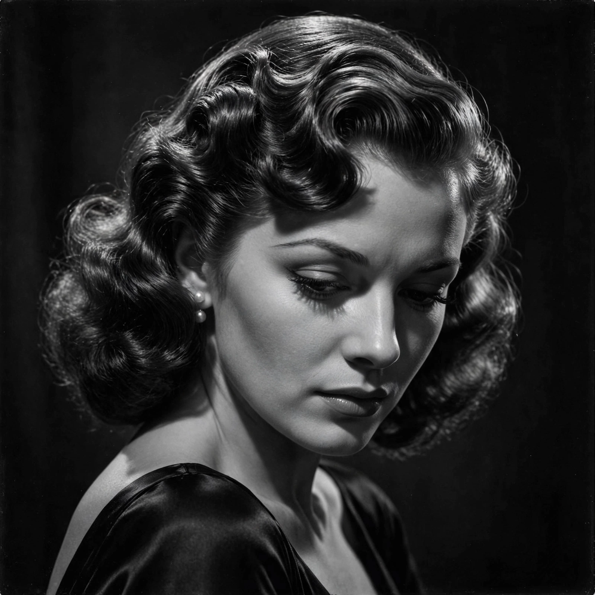

| Born | Betty Joan Perske, 16 September 1924, New York City, U.S. |
|---|---|
| Died | 12 August 2014 (aged 89), New York City, U.S. |
| Occupation | Actress |
| Years active | 1942–2014 |
| Spouses | Humphrey Bogart (m. 1945; died 1957); Jason Robards (m. 1961; div. 1969) |
| Awards | Honorary Academy Award (2009); two Tony Awards; Golden Globe Award |
Lauren Bacall (born Betty Joan Perske; September 16, 1924 – August 12, 2014) was an American actress. She was named the 20th-greatest female star of classic Hollywood cinema by the American Film Institute and received an Academy Honorary Award "in recognition of her central place in the Golden Age of motion pictures".

Bacall's sultry "Look" became an icon of film noir.
A former model, Bacall made her screen debut at 19 opposite Humphrey Bogart in To Have and Have Not (1944), directed by Howard Hawks, delivering the famous line "You know how to whistle, don't you, Steve? You just put your lips together and blow." Her chin-down, eyes-up gaze was marketed as "The Look". She and Bogart married in 1945 and co-starred in The Big Sleep (1946), Dark Passage (1947) and Key Largo (1948), the latter directed by John Huston.
After Bogart's death in 1957, Bacall reinvented herself on Broadway, winning Tony Awards for Applause (1970) and Woman of the Year (1981). Her film work continued for decades, including an Academy Award nomination for The Mirror Has Two Faces (1996). Her autobiographies, By Myself (1978) and Now (1994), were bestsellers. She died in New York in 2014, a month before her 90th birthday.